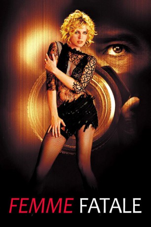
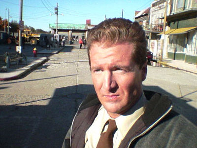
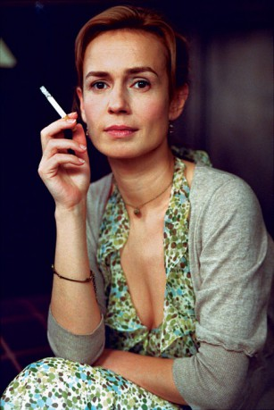
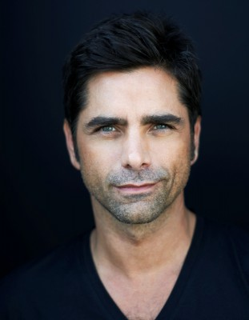
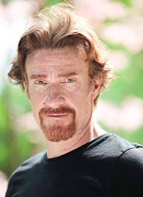

#7928 Femme Fatale
 
 IMDB-Wertung: 6.3 / 10
IMDB-Wertung: 6.3 / 10  Tomatometer: 49
Tomatometer: 49  Metascore: 0
Metascore: 0 
Ein großangelegter Juwelendiebstahl während der Filmfestspiele von Cannes läuft nicht so ab wie geplant - doch Laure, ein Mitglied der Verbrecherbande, kann mit der wertvollen Beute entkommen. Ihr Versuch, ihre Gangster-Kollegen zu betrügen und allein vom Raub zu profitieren, scheint aber fehlzuschlagen: einer von ihnen, Racine, spürt sie in ihrem Hotel auf und wirft sie nach einer heftigen Auseinandersetzung einfach über das Treppenhaus-Geländer. Zwar war man in einem der oberen Stockwerke zugange, doch Laure stirbt nicht - stattdessen erwacht sie in einer fremden Wohnung, wo ein altes Ehepaar sich um sie kümmert. Offensichtlich verwechselt es sie mit seiner Tochter - und deren Rolle nimmt Laure bald ein, nachdem sie den Selbstmord der Tochter beobachten mußte. Sie steigt in ein Flugzeug nach Amerika, lernt einen aufstrebenden Politiker kennen - und ist ihrer Vergangenheit, der Kriminalität und Verfolgung, endlich entflohen. So scheint es zumindest...
Jahr: 2002
Dauer: 114 Minuten
FSK: 16
Land: Frankreich Studio: Solo Film VerleihTonspuren: DD5.1 - ,
Untertitel: Deutsch, Englisch,
Auflösung: 1080p (1920x1080) Größe: 8355 MB
Genre: Thriller, Drama, Krimi, Mystery
Regisseur:  Brian De Palma
Brian De Palma
Drehbuch: Brian De Palma
Soundtrack: Ryuichi Sakamoto
Darsteller:
 Rebecca Romijn als Laure / Lily
Rebecca Romijn als Laure / Lily Antonio Banderas als Nicolas Bardo
Antonio Banderas als Nicolas Bardo Peter Coyote als Watts
Peter Coyote als Watts Eriq Ebouaney als Black Tie
Eriq Ebouaney als Black Tie Edouard Montoute als Racine
Edouard Montoute als Racine- Rie Rasmussen als Veronica
 Gregg Henry als Shiff
Gregg Henry als Shiff- Jean-Marc Minéo als Seated Guard
-  Matthew Géczy als Embassy Guard
 David Belle als French Cop
David Belle als French Cop- Françoise Michaud als Woman with Blind Man
-  Sandrine Bonnaire als Special Guest Cannes Film Festival
- Régis Wargnier als Special Guest at Cannes Film Festival
- Beata Ben Ammar als Special Guest Cannes Film Festival
- Pascal Bianco-Levrin de Bouzid als Cannes Film Festival Participant (uncredited)
-  John Stamos als Cheesy Agent (uncredited)
-  Thierry Frémont als Serra
- Fiona Curzon als Stanfield Phillips
- Daniel Milgram als Pierre / Bartender
- Jean Chatel als Cannes Commentator
- Stéphane Petit als Bodyguard One
- Olivier Follet als Bodyguard Two
- Éva Darlan als Irma
- Jean-Marie Frin als Louis
- Philippe Guégan als Bespectacled Man
- Denis Hecker als TV Moderator
- Laurence Breheret als Flight Attendant
- Salvatore Ingoglia als Truck Driver
- Laurence Martin als Nathalie
- Jo Prestia als Napoleon
 Alain Figlarz als Sex Shop Man
Alain Figlarz als Sex Shop Man- Bart De Palma als Power Room Guard
- Valérie Maës als The Blonde in Restroom, at Bridge and in Cafe
- David Cuny als Groom Hotel Sheraton
- Eric Fesais als Policeman
- Bertrand Merignac als Photographer
- Dan Herzberg als Surveillance Room Guard
- Samuel Olivier als Surveillance Room Guard
- Pascal Ondicolberry als Surveillance Room Guard
- Gérard Renault als Surveillance Room Guard
- Joaquina Belaunde als Woman in Panic
- Ugne Andrikonyte als Festival Guest
- Faco Hanela als Poster Man
- Marie Foulquie als Tourist
- Régis Quennesson als Tourist
- Matilde Tancredi als Medium on TV Show
- Pascale Jacquemont als Medium on TV Show
- Serge Gonnin als Thierry
- Aurélie Pauker als Brigitte - Lily's Daughter
- Isabelle Auroy als Grandmother
Datei: X:\2002\Femme Fatale (2002, FSK16, 1920x1080).mkv seit 07.01.2018
Festplatte: HD 1996-2002
 Es gibt insgesamt 93 Filme in der Gruppe '2002'
Es gibt insgesamt 93 Filme in der Gruppe '2002'